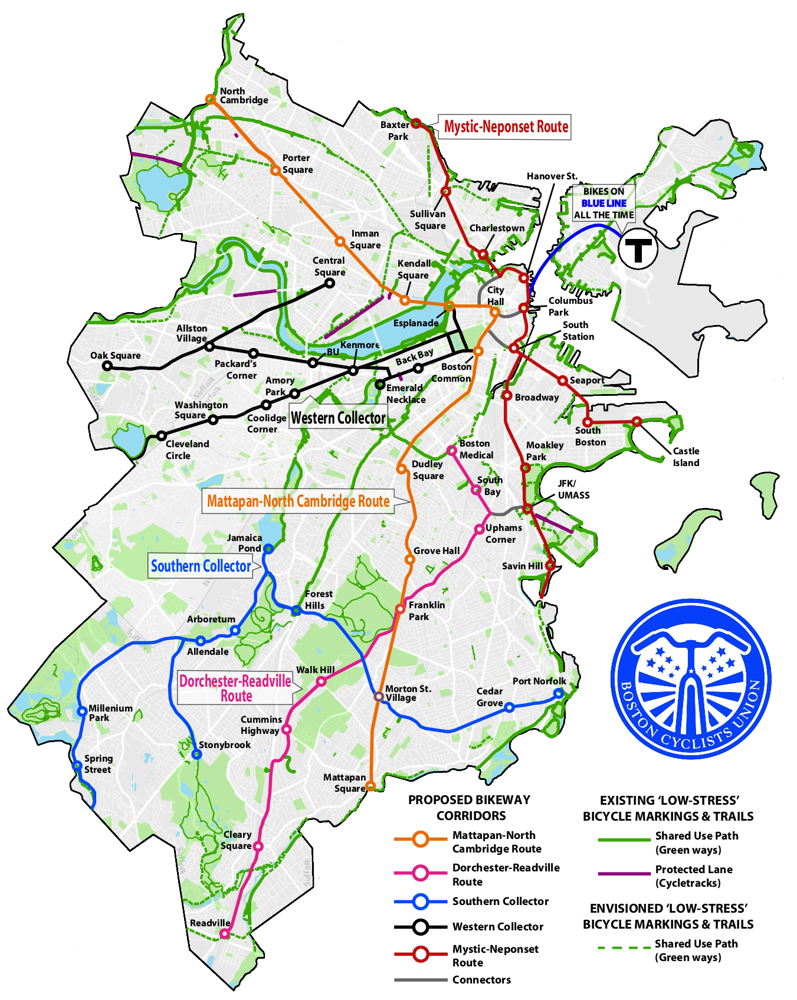

<!doctype html>
<html lang="en">

	<head>
		<meta charset="utf-8">

		<title>Bikeways for Everybody</title>

		<meta name="description" content="Crowdsourcing Better Biking Infrastructure with a Webmap">
		<meta name="author" content="Raphael Dumas">

		<meta name="apple-mobile-web-app-capable" content="yes" />
		<meta name="apple-mobile-web-app-status-bar-style" content="black-translucent" />

		<meta name="viewport" content="width=device-width, initial-scale=1.0, maximum-scale=1.0, user-scalable=no, minimal-ui">

		<link rel="stylesheet" href="css/reveal.css">
		<link rel="stylesheet" href="css/theme/night.css" id="theme">

		<!-- Code syntax highlighting -->
		<link rel="stylesheet" href="lib/css/zenburn.css">

		<!-- Printing and PDF exports -->
		<script>
			var link = document.createElement( 'link' );
			link.rel = 'stylesheet';
			link.type = 'text/css';
			link.href = window.location.search.match( /print-pdf/gi ) ? 'css/print/pdf.css' : 'css/print/paper.css';
			document.getElementsByTagName( 'head' )[0].appendChild( link );
		</script>

		<!--[if lt IE 9]>
		<script src="lib/js/html5shiv.js"></script>
		<![endif]-->
	</head>

	<body>

		<div class="reveal">

			<!-- Any section element inside of this container is displayed as a slide -->
			<div class="slides">
				<section data-markdown>
					<script type="text/template">
                        ### Bikeways for Everybody 
                        <br />  
                        Crowdsourcing Better Biking Infrastructure with a Webmap
                        <br />
                        #####2016-07-09  
                        <br />
                        ###Created by [Raphael Dumas](http://radumas.info)
                        Follow along at [radumas.info/blog/presentations/20160709/](https://radumas.github.io/blog/presentations/20160709/)  
                    </script>
				</section>
                
                <section id="aboutme" data-markdown>
					<script type="text/template">
                        ##About Raphael
                        <br />
                        
                        * B. Eng Civil <t><t> _McGill 2012_  
                        <br>
                        * M.S. Transportation & M. City Planning <t> _MIT 2015_  
                        <br>
                        * Master's Thesis: _Analyzing Transit Equity Using Automatically Collected Data_  
                        <br>
                        * Data & GIS at Boston Cyclists Union
                    </script>
                </section>
                
                <section id="aboutbcu" data-markdown>
					<script type="text/template">
                        ##Boston Cyclists Union 
                        <br />
                        
                        * Local advocacy organization fighting for better bicycling infrastructure for all  
                        <br>
                        * Organize group rides to promote everyday use of bicycle  
                        <br>
                        * Provide free bike repair and mechanic education
                    </script>
                </section>

                
                <section data-markdown>
					<script type="text/template">
                        We're really good at packing the house
                          
                        [&copy; LeilaRQuinn](https://twitter.com/leilarquinn/status/743210124525899776)
                    </script>
                </section>
                
                <section data-state="centerText" data-markdown>
                    <script type="text/template">
                    ###But easy wins have been won. 
                    ###Need a compelling vision to justify future projects.
                    </script>
                </section>
                    
                <section data-markdown>
                    <script type="text/template">
                    </img>
                    </script>
                </section>

                <section data-markdown>
                    <script type="text/template">
                    ###Could I build a digital map?
                    <br>
                     - That users could draw in routes and mark dangerous points  
                     <br>
                     - That records their comments on their drawings  
                     <br>
                     - And aggregates the input
                    </script>
                </section>

                <section id="inspiration">
                    <section data-markdown>
                        <script data-state="centerText" type="text/template">
                        #Inspiring projects
                        </script>
                    </section>
                    
                    <section data-markdown>
                        <script type="text/template">
                        ###[Mike Foster's CrowdMapping Tutorial](http://duspviz.mit.edu/web-map-workshop/cartodb-data-collection/)
                        <iframe width="1366" height="540" src="http://duspviz.mit.edu/web-map-workshop/cartodb-data-collection/">%nbsp; </iframe>
                        </script>
                    </section>
                    
                    <section data-markdown>
                        <script type="text/template">
                        ###[Sarah Bindman's Veloroutes](https://github.com/sbindman/Veloroute)
                        <iframe width="1366" height="540" src="http://veloroute.herokuapp.com/">%nbsp; </iframe>
                        </script>
                    </section>
                    
                </section>
                
                <section id="workflow">
                    <section data-state="centerText"  data-markdown>
                        <script type="text/template">
                        #Workflow
                        </script>
                    </section>
                    
                    <section data-markdown>
                        <script type="text/template">
                        ###Discovered the CartoDB SQL API
                        <pre><code class="sql">CREATE OR REPLACE FUNCTION insert_bikeways_data (
                            _geojson TEXT,
                            _notes TEXT,
                            _name TEXT,
                            _zip TEXT)
                        --Has to return something in order to be used in a "SELECT" statement
                        RETURNS integer
                        AS $$
                        DECLARE 
                            _the_geom GEOMETRY;
                        BEGIN
                            _the_geom := ST_SetSRID(ST_GeomFromGeoJSON(_geojson),4326); 
                            EXECUTE ' INSERT INTO bikeways (the_geom, notes, name, zipcode)
                                    VALUES ($1, $2, $3, $4)
                                    ' USING _the_geom, _notes, _name, _zip;
                            RETURN 1;
                        END;
                        $$
                        LANGUAGE plpgsql SECURITY DEFINER ;
                        GRANT EXECUTE ON FUNCTION insert_bikeways_data(text,text,text,text) TO publicuser;
                        </code></pre>
                        [CartoDB API tutorial](http://blog.cartodb.com/read-and-write-to-cartodb-with-the-leaflet-draw-plugin/)
                        </script>
                    </section>
                    
                    <section data-markdown>
                        <script type="text/template">
                        ###Created a basic leaflet-draw to CartoDB map
                        
                         <iframe width="1366" height="540" src="http://radumas.info/crowdmap-basic">%nbsp; </iframe>
                        </script>
                    </section>
                    
                    <section data-markdown>
                        <script type="text/template">
                        ###Then added Mapbox Directions to Enable Route-Drawing
                        
                        <iframe width="1366" height="540" src="http://radumas.info/bikeways4everybody">%nbsp; </iframe>

                        </script>
                    </section>
                    
                </section>
                
                <section id="data-processing">
                    <section data-markdown>
                        <script type="text/template">
                        #Data Processing and Results
                        </script>
                    </section>
                    
                    <section data-markdown>
                        <script type="text/template">
                        ###Points  
                        <br/>
                        <br/>
                        - Grouped using hierarchical spatial clustering in PostGIS  
                         <br/>
                         - All points within a diameter of x are aggregated and their comments aggregated for tooltips  
                        </script>
                    </section>
                    
                    
                    <section data-markdown>
                        <script type="text/template">
                        ###Lines  
                        <br/>
                        <br/>
                         - Custom PostGIS algorithm to split lines by overlap  
                         <br>
                         - Count # overlap and aggregate comments for tooltips  
                         <br>
                         <small>[See more here](https://github.com/radumas/bikeways4everybody/tree/gh-pages/data-analysis)</small>
                        </script>
                    </section>
                    
                    <section data-markdown>
                        <script type="text/template">
                        ###Automating Processing with Heroku
                        
                        <iframe width="1366" height="540" src="http://www.radumas.info/blog/bcu/tutorial/2016/06/15/Heroku-update-cartodb-table.html ">%nbsp; </iframe>
                        </script>
                    </section>
                    
                    <section data-markdown>
                        <script type="text/template">
                        ###Results
                         
                        <iframe width="1366" height="540" src="https://bcu.carto.com/viz/4aa385ec-f83d-11e5-9dc1-0e3ff518bd15/embed_map">%nbsp; </iframe>
                        </script>
                    </section>
                    
                </section>
                    
                <section data-markdown>
                    <script type="text/template">
                    ###The Future
                    <br>
                     - Refactor route-drawing javascript and make it a leaflet plugin  
                     <br>
                     - Other minor [issues](https://github.com/radumas/bikeways4everybody/issues)  
                     <br>
                     - Check out the project and see where you can take it
                       * [github.com/radumas/bikeways4everybody](https://github.com/radumas/bikeways4everybody)
                    </script>
                </section>
                
            </div>

		</div>

		<script src="lib/js/head.min.js"></script>
		<script src="js/reveal.js"></script>

		<script>

			// Full list of configuration options available at:
			// https://github.com/hakimel/reveal.js#configuration
			Reveal.initialize({
				controls: true,
				progress: true,
				history: true,
				center: false,
                slideNumber: true,
                previewLinks: true,
				transition: 'slide', // none/fade/slide/convex/concave/zoom

				// Optional reveal.js plugins
				dependencies: [
					{ src: 'lib/js/classList.js', condition: function() { return !document.body.classList; } },
					{ src: 'plugin/markdown/marked.js', condition: function() { return !!document.querySelector( '[data-markdown]' ); } },
					{ src: 'plugin/markdown/markdown.js', condition: function() { return !!document.querySelector( '[data-markdown]' ); } },
					{ src: 'plugin/highlight/highlight.js', async: true, condition: function() { return !!document.querySelector( 'pre code' ); }, callback: function() { hljs.initHighlightingOnLoad(); } },
					{ src: 'plugin/zoom-js/zoom.js', async: true },
					{ src: 'plugin/notes/notes.js', async: true }
				]
			});
            Reveal.addEventListener( 'centerText', function() {
                Reveal.configure({center: true});
            }, false ); 
		</script>

	</body>
</html>
